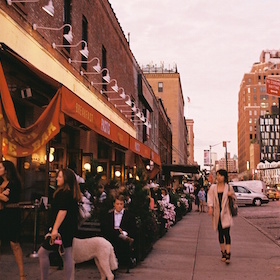

Meatpacking
#epicview #beautifulpeople #daytime #nighttime #outdoor #girlfriends #exclusive #cocktails #coctailattire #danceparty
Neighborhood Lowdown
Where the rich bankers come to prey on hot younger 20 something women like you! Just kidding! But kind of. It's undeniable that to frequent these venues, you'll have to have a little bit of money, which is why it inevitably attracts those who make more. Originally the district where meat got packed and loaded up and put onto ships, these old warehouses by the Hudson have been converted into bunch of glamorous clubs and cool places to enjoy the nightlife.
Public Transit Service: A, C, E
Cup of Joe

Think Coffee - 73 8th Avenue
A bright and airy location for a decent cup of coffee.
Let's get started
Drink
Le Bain
#epicview #beautifulpeople
Le Bain at the top of the Standard Hotel - My favorite view and everything you would imagine a typical NYC nightclub to be. Even clubs are not really your scene, I would recommend going to the the outdoor portion just to have a look at the breathtaking night view, especially since you'll be there in summer!
Boom Boom Room
#epicview #beautifulpeople #exclusive #cocktails #cocktailattire
Right next door to Le Bain is a snazzy place for snazzy drinks. Again, very stereotypical NYC experience, but definitely worth seeing. Seb mentioned that your parents will be coming to visit in May - this could be a cool place to make a reservation for evening cocktails (reservations are a MUST) for the fam!
The Jane Hotel
#danceparty #beautifulpeople #exclusive
A classic hotel with classic furnishings-the lounge is a classy place for drinks until it gets packed and turns into an awesome party where people dance on tables and couches alike. Beware! I've also found the Jane to be an unofficial party location for the French (similar to the rest of New York City, but particularly more so here).
Recommended Trip
Meatpacking is super close to Chelsea, so making a day out of both works as well!

Walk the Highline
Boom Boom Room
The website says cocktail attire, but if you don't feel up for and want to grab a casual afternoon drink at a time that's not packed, you can always go in whatever you like.
- liang.val63@gmail.com |
- 02.22.2015 |
- valpal23.blogspot.com |
- Home
This website is not intended for public viewing and all photos used are only temporary placeholders.